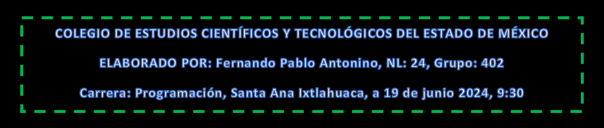

LECCIONES CONSTRUYE-T
Leccion:7 ¿Tengo prejuicios?
Leccion:8 Empatía: Poniéndome en los zapatos del otro
Leccio:9 Hacer el bien sin mirar a quien
Leccion:10 Perspectivas y contextos diferentes
Leccion 11: ¿Quiénes participamos?
Leccion 12: Pensar en grande y decidirnos a actuar
Todos los derechos son reservados por Fernando Pablo Antonino ,tel :7122032049,antoninofernando04@gmail.com página :webcaratula